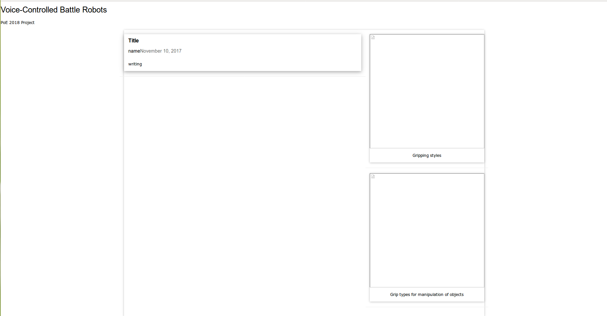

Our Website
Hi! This is a metaphysical post, because it is a post on our website.. about our website. Making this website, we had the option of using Weebly, or some other website generator. But, one of our goals was to do something challenging, so we decided that we would code our own website using HTML, CSS, and Javascript.
We started out by picking a website template on HTML 5 UP. In Atom, we got rid of the template content, and started putting in our own. (As a person who hasn't made websites before) it was cool to start off by changing text and seeing it pop up on the HTML generator!
We think the hardest page to change was the team page. First, we took the index page, and got rid of the blog and other stuff. We also tried adding more icons to show all of our faces as small pictures, but it would always come out as three icons on top and two on the bottom, left-centered. We tried changing the icon type (which didn't work), and the < div class="col-4 col-12-medium" > to < div class="col-4 col-20-medium" >, which made it such that multiple could fit in our second row. Next, we dug into the css code to find the left margin for the class and change it from 0 to 20 em. This made it such that the icons weren't pressed directly onto the left of the screen. What really fixed it, however, was chaging the
Another problem which we encountered was creating the blog pages. We had absent-mindedly deleted two template pages which had contained an outline, which had a column for text and a column for pictures. This is exactly what we needed, but we didn't know we had it ! So, we tried hardcoding a new page layout, which involved changing and creating classes and id's, most of which made the html and css unhappy (there was a conflict), and the whole webpage went white. What finally worked was inspecting the element of a POE website which we admired, Tenacity, and slowly incorporating their elements one by one into our html and css files. Some times, their functions would overwrite ours, so we would have to figure out what was causing a problem and change that in our current css instead of adding theirs. We ended up with a website template which looked like this:
After that, however, we indeed realized that our template had the same layout installed and we decided to use that instead and tweak it, because it fit the theme better.
Overall, a large part of creating the website was having some intuition as to changing what would give us the result which we wanted to see, testing it and debugging. As stated above, the debugging consisted of going into the css file, finding the right class and changing some property, or creating a class or id and giving it unique properties.